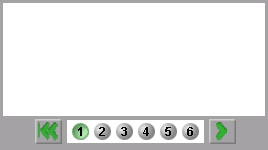

MAP Content Tools

|
MAP Content Tools
|
|
There are two tools that are used to aid in the creation of content items for the MAP learning environment. The Page Browser is a tool that allows for easy navigation between different pages in a content item. The Answer Form is a tool that allows the easy creation of a question with multiple choice, true/false, or numerical entry answers.
The following pages assume that the reader has some basic knowledge about html content creation and directory structures. Especially framesets.
The Page Browser
The Page Browser is a java applet that displays a number of page buttons and allows the user to navigate between these pages.
The Page Browser is capable of dealing with multiple frames on each page, and with different framesets on different pages. It can also interact with Java Applets that implement a Java interface called PageBrowserListener
A number of examples have been created to guide you through the creation of a Page Browser enabled content item.
The Answer Form
Here
Java Plugin
The Answer Form and Page Browser applets require the Java Plugin to run. The plugin can be downloaded from Javasoft.
To view any of the examples on these pages, you will need to have this plugin installed on your system.
The Answer Form and Page Browser applet html files on these pages have passed through the HTML Converter. Information about the HTML Converter can be found from Javasoft.
The HTML Converter edits an html file containing an APPLET tag. It comments out the original tag, and creates an EMBED tag for Netscape, and an OBJECT tag for Internet Explorer. It also strips out any comments that are in the original applet tag.
The easiest way to make changes to files that have been run through the HTML Converter is to remove all the extra tags put in by the converter, leaving only the original APPLET tag which is commented out. Uncomment the original APPLET tag, edit it as needed, and re-run the Converter on the file.
In these pages the exerpts and descriptions are based on pre-converted files. So don't be confused when there is only an APPLET tag to deal with.